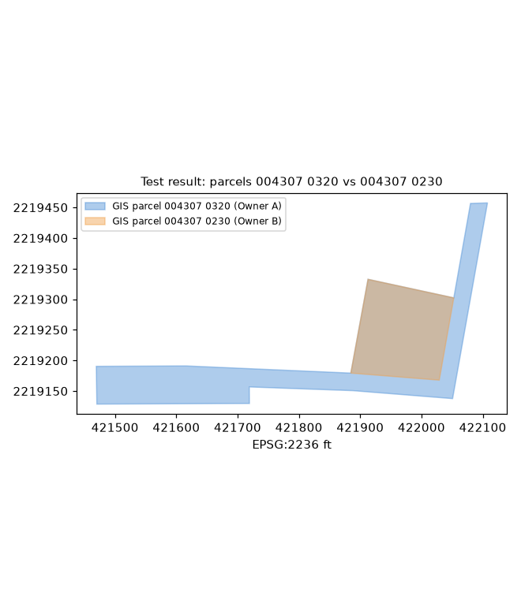

contained_parcel · glossary · deed-checked (test)
Likely City GIS polygon over-drawn; lean cut Owner B from City, but not resolvable from the tax deed
Proposed · test result · low · status: proposed (not applied, not a finding) · overlap 20973.61 sq ft
larger parcel's legal excepts a deed of the smaller parcel
Parcels & ORB references
| parcel | owner (PA) | ORB book-page |
|---|---|---|
| 004307 0320 | Owner A | 13934-01037, 02384-00383 |
| 004307 0230 | Owner B | 04886-00064 |
Deed evidence
ORB 13934-1037 (Tax Deed 2007, TD# 99-1006, to City of Jacksonville)
acres gis city: 1.229 · acres gis Owner B: 0.481
- Tax deed ORB 13934-1037 conveys only 'PT PVT RD' in Dinsmore Farms by reference to adjoining O/R deeds; no bearings, no acreage
- A private-road strip should not wholly contain a 0.481 ac lot (100% inside, City GIS 1.229 ac)
Overlay figure

Figure generated from county GIS outlines and the best-fit deed traverse (no aerial basemap; parcel IDs only). Data quality test result, not authoritative.